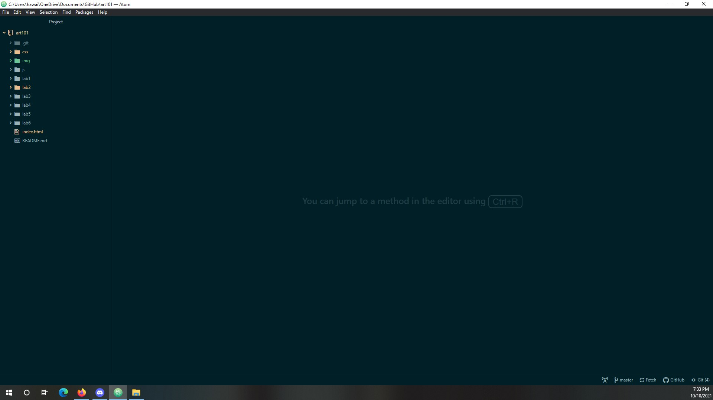
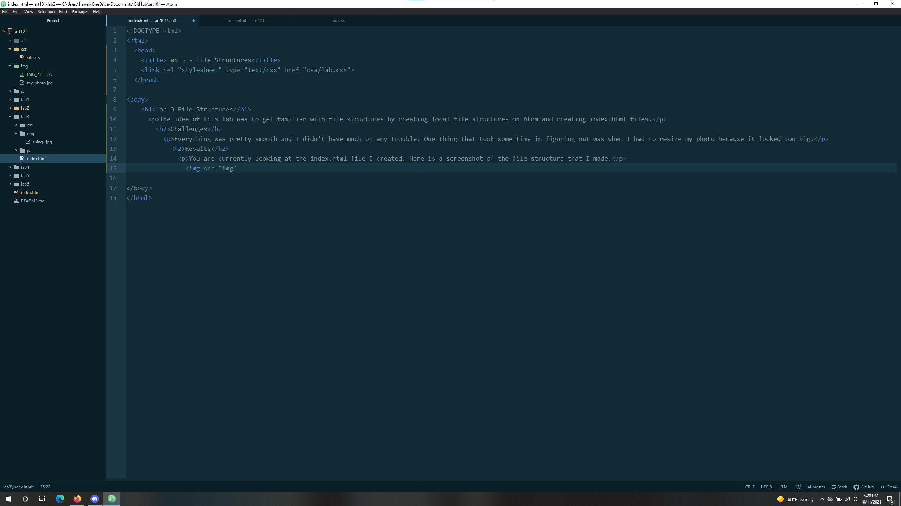
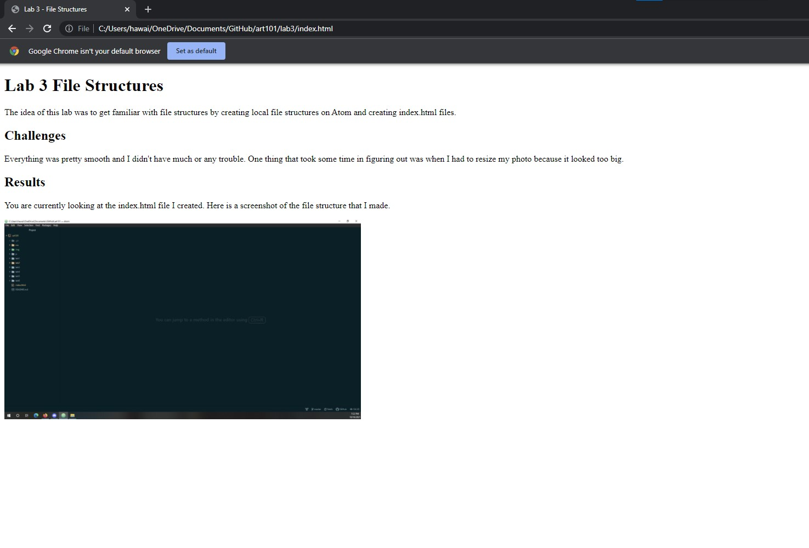
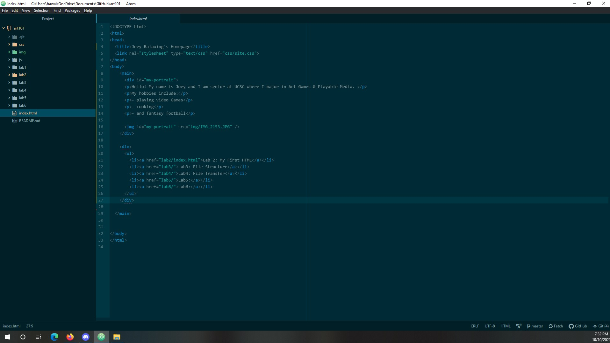
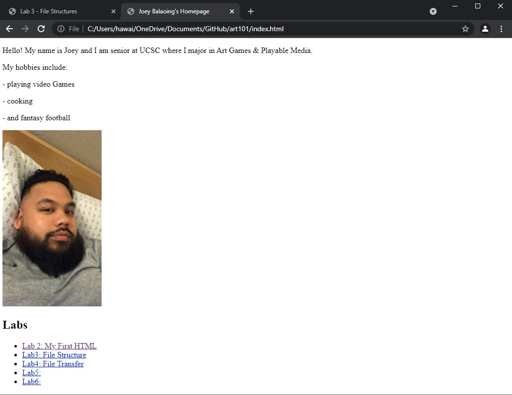

The idea of this lab was to get familiar with file structures by creating local file structures on Atom and creating index.html files.
Everything was pretty smooth and I didn't have much or any trouble. One thing that took some time in figuring out was when I had to resize my photo because it looked too big. Something that proved to be challenging though was trying to help others with their Lab. I had some success in helping Sonia but I coudln't fully help Monique with some of her lab problems.
You are currently looking at the index.html file I created.
Here is a screenshot of the file structure that I made:
This is a screen shot of my source code for Lab 3:
Here is a screen shot of my Lab 3 website:
This is a screen shot of the source code of my website:
Here is a screen shot of my personal website:
